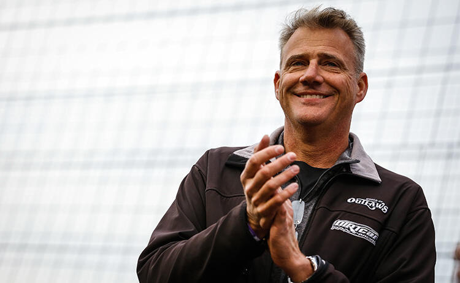

Brian Carter Says World of Outlaws Will Add About $400,000 Midseason Points Fund in 2027
In a DIRTVision interview with Conner Wade, the World Racing Group CEO said the additional money would go to the top 10 in Sprint Car points after Pevely and be paid on stage at the Knoxville Nationals. He said the plan is “not completely finalized,” and the series has not issued a release.

World Racing Group CEO Brian Carter said the World of Outlaws plans to add about $400,000 for 2027, paid to the top 10 in Sprint Car points after the series’ stop at Pevely, Mo., on stage at the Knoxville Nationals. Carter made the comments in a DIRTVision interview with Conner Wade, titled “One on One: Brian Carter 2026,” which DIRTVision posted Nov. 20. Justin Fiedler of DIRTRACKR reported the remarks in a Nov. 27 recap of the more than 40-minute interview. Carter said the existing point fund is not changing. He called the new payout “not completely finalized” and said he had only “teased the teams” about it. As of Nov. 28, the World of Outlaws had not issued a release on the fund or on the tire change discussed in the same interview.
According to DIRTRACKR’s account of the interview, the additional checks would be paid in August and split between car owner and driver, though Carter did not give a ratio. Fiedler reported that WRG is also looking for a title sponsor for the fund. Carter gave three reasons for the new money, DIRTRACKR reported: he wants the top 10 recognized in front of the Knoxville crowd; he wants a midseason points race that matters going into Pevely; and it helps WRG’s books. He said his “pressure goes up in November,” because that is when the big checks are written, the Sunday after World Finals, and that moving some of the payout to August would spread it out.
DIRTRACKR said Pevely was Aug. 7-8 this year, the weekend before the Nationals, and that in its results that cutoff fell 48 features into the Outlaw season, with 30 still to go. The 2027 NOS Energy Drink Knoxville Nationals presented by Casey’s are scheduled for Aug. 11-14, according to a Nov. 3 World of Outlaws release announcing the series’ extended partnership with Knoxville Raceway. Fiedler wrote that the Outlaws paid out $2.2 million in 2026 between the point fund and exclusivity bonus program, about $400,000 more than the previous year, and that Carter said they would take the same step again for 2027. In High Limit Racing’s recent schedule announcement, Fiedler wrote, the series highlighted $2.9 million-plus available for franchise teams through the High Roller club. DIRTRACKR also noted that in the 2026 final World of Outlaws standings, Spencer Bayston held 10th by 30 points over Bill Balog.
Carter also said the World of Outlaws will remain a Hoosier-only series and will add an optional 18-inch-wide Hoosier right rear alongside the existing 16-inch tire, with teams choosing which one to run, according to DIRTRACKR. He said the 18-inch tire is the same compound with a different construction and is “a lot more stable” when the track is not ideal. “The goal is to put on a better product on the race track,” Carter said, as quoted by DIRTRACKR. He said he hopes the option widens the track early in the night and lets drivers run a cushion or a chunky spot more steadily, and used Donny Schatz as an example, saying it would be fun to see him run the lower middle in places where he may have struggled on the 16.
DIRTRACKR reported that the tire has been tested several times, including at Eldora Speedway and Knoxville, and that the compound was adjusted along the way. The plan is to launch it in February with both widths available right away, though Carter said there are still “some details to work out” with Hoosier. He said cars will need setup changes depending on which tire a team picks, and he expects to see some teams on 16s and some on 18s. Asked whether he pushed Hoosier into the change, Carter said WRG had been working on it “probably longer than we should have,” DIRTRACKR reported. He was sympathetic to Hoosier, pointing to supply chain problems, rising costs and quality-control issues he said every manufacturer deals with, and called Hoosier “a great partner.”
On the question of an open tire rule, Carter said, “I’m not aware of any professional motorsports organization that allows anything more than one manufacturer,” according to DIRTRACKR. He followed that with, “So if somebody showed me a model of that, I’d be surprised that it actually worked.” He argued the issue was one of scale, saying, “If NASCAR doesn’t think they can tech it, to have more than one, or NHRA, or F1, or IndyCar, how in the world am I supposed figure that I can do that in a successful manner that I can be fair to everybody.” DIRTRACKR reported that Carter also recalled earlier open-tire days, when teams hauled a second trailer just for tires and did not know which one they needed until they arrived at the track. His biggest concern, Fiedler wrote, was smaller teams. Carter said an open rule “undermines the ability for the mid tier team to come out and think they can be competitive,” and added that weekly racing and the DIRTcar and Outlaws brands have to work together.
DIRTRACKR noted that the interview’s release came not long after High Limit Racing announced a controlled open tire rule for 2027. High Limit’s announcement, published by FloRacing, said the series will allow American Racer and Hoosier tires, including a Hoosier 18-inch right rear option. Fiedler wrote that the DIRTVision interview was likely recorded before High Limit’s official announcement.
Carter also discussed Knoxville Raceway’s decision to keep the World of Outlaws and DIRTVision. The Marion County fair board voted earlier this month to extend the sanctioning and streaming partnership through 2031, covering 2027 through 2031, as announced in the Nov. 3 World of Outlaws release. In the DIRTVision interview, Carter’s explanation was, “It’s about relationships and creating long-term value,” DIRTRACKR reported. He said WRG brings value beyond writing a streaming check, including help selling Nationals tickets and weekly and other Outlaws shows at the track, and pointed to respect for the brand on both sides and the fair board’s confidence in where WRG is headed. On the streaming fee, Carter alluded to the fact that WRG’s offer was not as high as FloRacing’s, DIRTRACKR reported, but pointed toward “creating a long term value proposition that was hard to match.”
Carter leaned on history, counting 48 years together going back to the Outlaws’ first season under Ted Johnson, according to DIRTRACKR. He also discussed 2020, when racing stopped March 13. He said that when the Outlaws raced at Knoxville with no fans that May, he and Carlton Remers were the only two people in the grandstands, and that they returned later that summer with a limited crowd. Carter said WRG took on the financial risk and helped Knoxville “put enough money in the bank” to pay its bills that year, and that a fair board member brought that up during the talks and credited it with keeping Knoxville “from getting in a hole” going into 2021. He tied the Knoxville renewal to multi-year extensions with Huset’s Speedway and The Dirt Track at Charlotte, and said all three show the tracks’ “confidence in our long-term vision.” “Knoxville and the World of Outlaws are synonymous, and I expect them to be for a long, long time.”
DIRTRACKR reported that Carter also said WRG is not beholden to any one company, that its business is self-sustaining, and that it is not dependent on the outside world. Fiedler wrote that Carter remains focused on having fans at the track buying tickets, and that while Carter knows how important DIRTVision and streaming are, WRG is still focused on selling tickets and promoting live attendance.
DIRTVision and Wade also said Carter discussed other topics in the interview. Wade wrote on Nov. 20 that Carter talked about “growing some of the new markets visited this past season,” as well as the midseason points fund and the new tire option. On Nov. 25, DIRTVision posted a clip in which it said Carter talked about the importance of support classes and what they bring to a night at the dirt track. The full interview is available on DIRTVision.